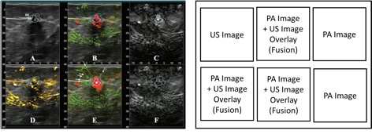
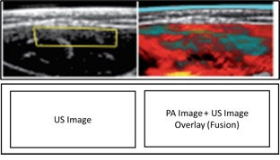

| DICOM PS3.17 2024c - Explanatory Information |
|---|
These examples show real world examples of different display arrangements (as could be achieved by Hanging Protocols and Blending Presentation States). The emphasis here is to illustrate that multiple Photoacoustic images (and potentially images from other modalities) will likely be evaluated by the clinician in side-by-side or overlay/fusion views.
Figure AAAAA.4-1 [Neuschler 2018] illustrates a Photoacoustic (PA) acquisition with two input wavelengths and ultrasound (US), displayed in six different panels with Photoacoustic Images (C, F), US images (A), and three overlay (fusion) images with Photoacoustic and US (B, D, E) representing three imaged properties, generated from three algorithms for processing the Photoacoustic wavelengths and fusing with ultrasound. This case is similar to the pattern of attributes shown in AAAAA.3.2 Example 2: Photoacoustic/US Coupled Acquisition, however five Photoacoustic images and one US image would be captured.
|  |
Figure AAAAA.4-1. Two Photoacoustic (PA) Optical Wavelengths, Processed and Fused with Ultrasound (US)
Figure AAAAA.4-2 [Regensburger 2019] illustrates a Photoacoustic (PA) acquisition with two ranges of multispectral input wavelengths and ultrasound (US), displayed in two different panels with the US image (left) and the Photoacoustic image (right) representing two imaged properties, generated from two algorithms for processing of the Photoacoustic wavelength in a "cyan" and a "hot" colormap and fusing with ultrasound. This case is similar to the pattern of attributes shown in AAAAA.3.2 Example 2: Photoacoustic/US Coupled Acquisition, where two Photoacoustic images and one US image would be captured.
|  |
Figure AAAAA.4-2. Photoacoustic (PA) with Two Ranges of Multispectral Wavelengths, Processed and Fused with Ultrasound (US)
Figure AAAAA.4-3 [Aguirre 2017] illustrates a Photoacoustic (PA) acquisition with one input wavelength displayed as a Photoacoustic image in three planes (left) and a Photoacoustic image (right) representing a range of imaged properties, processed with an algorithm to show frequency separation in three planes. This case is similar to the pattern of attributes shown in AAAAA.3.1.1 Photoacoustic Single Wavelength Standalone Image, however three Photoacoustic images would be captured from the single input wavelength.
| DICOM PS3.17 2024c - Explanatory Information |
|---|